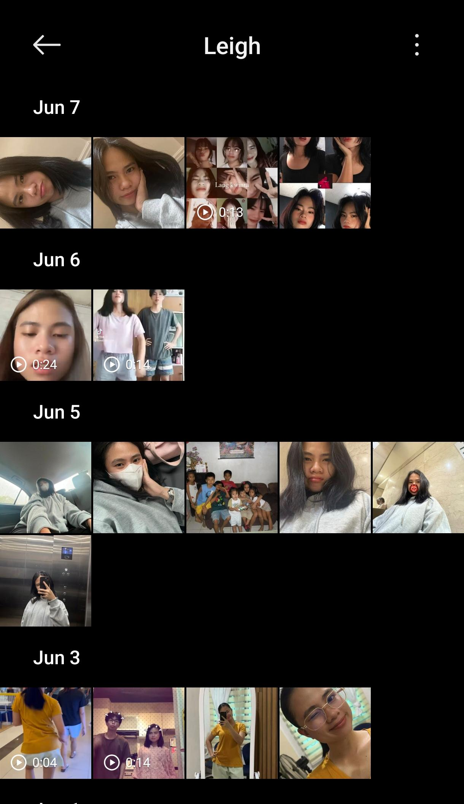

Whispers of the Heart: For the Love of My Life Leigh
Sayang, if u're reading this, thank you for giving me a little bit of ur time.
I know I could have simply send a message.
I know I could have written a short apology and hope it would be enough.
But there were too many things in my heart that I wanted to say, and I was afraid that a few messages could never fully express them.
So I made this website.
Not to pressure u.
Not to ask for an immediate response.
I made this because u are someone important to me, and here maybe my thoughts could be shared honestly and sincerely.
Inside these pages, u'll find pieces of our story, my apology, and the things I have been wanting to tell u.
Some of them may be difficult to read.
Some may be things u already know. But every word here comes from a place of sincerity. U can tap on Our Story, My Apology and My promise & Our Future
Our Story
19 December 2025, the first time we met.
A simple conversation became something I never expected. It's so random.
We met in a way that many people would call unusual. No handshakes, no shared coffee, no walks under the same sky. Just two people separated by distance.
And as the time passed, we being friends and there's one day that we started our Tiktok Streak and from that we being closer each other.
Learning about each other through screens, messages, calls, and the small moments we chose to share.
And yet, somehow, those moments became important to me.
Every day, I found myself looking forward to hearing about ur day, ur thoughts, ur worries, and even the little things that most people would overlook.
Slowly, what started as curiosity became admiration, and admiration became something deeper.
The truth is, we haven't known each other for years.
We haven't even met in person.
But sometimes the length of time isn't what matters most. Sometimes it's the sincerity of what is shared within that time.
And in these months, u became someone I genuinely care about.
I want to see grow on every aspect. That's why i always tell u to be healthy and other else. Telling u to drink banyak water, take a bath twice, makan veggies, record ur expense, etc.
And i really mean it.
What i saw in u sayang, u were carrying wounds that weren't mine to heal.
U had just walked away from a chapter of ur life that left scars on ur heart. I know healing is not something anyone can force, and I know there are days when the weight of the past still follows u.
I never wanted to replace anyone.
I never wanted to rush ur healing.
What I wanted was much simpler.
I wanted u to know that even on ur hardest days, there is someone who sees ur value.
Someone who sees ur strength.
Someone who sees the beautiful person that u sometimes struggle to see in urself.
Maybe we haven't create so many memories yet, but do u remember sayang? we're dreaming about a happy life that we want to build in the future.
We want to break the chain of our broken family. We want our kids don't feel what we feel.
And I really want to be with u in the process to achieve that goals.
I really wanna see u growing up, be happy and have a peace in ur life.
Ykw sayang,
I don't dream about perfection.
I don't dream about a fairytale.
I dream about seeing u happy.
I dream about seeing u smile more often.
I dream about seeing u being healthy.
I dream about watching u grow into the person u want to become.
I dream about the day u look in the mirror and truly love urself.
Not because of me.
But because u finally realize how worthy u have always been.
If I could contribute even a small part to that journey, I would consider myself incredibly fortunate.
And that's what i really wanna do. To help and guide u. And all this time i already see u growing up.
My Apology
Sayang..
I am truly sorry for my actions
Today, I am writing this because I know I hurt u and disappoint u. And knowing that I became the reason for ur discomfort is something that genuinely breaks my heart.
You trusted me enough to let me into ur world. You shared ur thoughts, ur fears, and parts of urself that were not easy to share.
For that, I am deeply sorry. Because someone I care about was hurt by something I did.
And that matters to me more than anything.
I hope this message finds u, even if it's in a moment of uncertainty. I've spent a lot of time reflecting on
us, on our journey together, and the gravity of my actions. I want to sincerely apologize for any pain I may have
caused u.
Our journey, marked by countless shared stories, holds a special place in my heart. From the
laughter that echoed through the days to the quiet moments that spoke volumes, each step we took together was a
testament to the love I feel for u.
I want u to know that my love for u has always been unwavering. In the middle of challenges and
misunderstandings, it remains a constant force in my life. I cherish the unique bond we share, and the thought of
losing that connection is something I cannot bear.
I recognize and take full responsibility for the mistakes I've made. They were never a reflection of my feelings
for u but rather a lapse in judgement. I'm committed to learning from these mistakes and doing the necessary work
to rebuild the trust that may have been shaken.
I understand that words alone may not be enough, but I am willing to do whatever it takes to fix things. ur
happiness and our connection mean the world to me.
I respect the space you need, and like always, I'm here whenever u're ready to talk or whenever u need me. Our journey is a story worth fighting
for, and I am committed to making it one filled with love, understanding, and growth.
With all my love,
My Promise & Our Future
Sayang,
I cannot promise perfection.
I cannot promise that I will never make mistakes again.
But I can promise that I will learn.
I will listen better.
I will respect your boundaries better.
I will be more careful with ur feelings.
And every day, I will try to become someone who adds peace to ur life instead of stress.
Someone who supports ur healing instead of making it harder.
Someone who reminds u that your happiness matters.
Because it does.
You matter.
More than u know.
Maybe one day we will finally meet.
Maybe one day the distance between us will disappear.
Maybe one day we will look back at this chapter and smile.
I don't know what the future holds.
But I do know this:
Meeting u was one of the most meaningful things that happened to me.
And no matter what happens next, I will always be grateful for every conversation, every laugh, every late-night call, every moment u allowed me to be part of ur life.
Like i told u, I really want to marry u one day and i really want to build a happy family with u. And being successful with u. Together.
And sayang, one day, i wanna buy foods for u, a tulip, a chocolate cake, and everything that make u happy. A simple action but i really want to do it.
And ykw sayang, maybe now i only have a few of ur photos. But i really want to have more. And also our photos and memories together that we will create later until we're grow old.
Because u r my really cantik girl in my eyes. So please always be confident ya sayang. I love u so much. And im sorry for everything.

Thank you for being u.
And thank you for reading this.